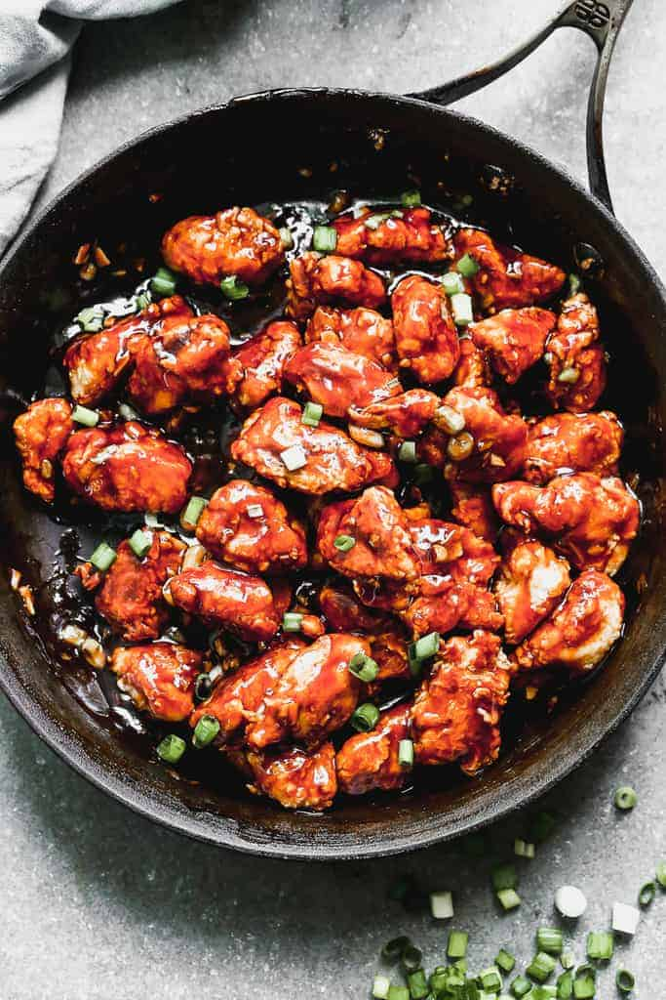

General Tso's Chicken

Description
Homemade General Tso’s Chicken with crispy pan-fried chicken in a sweet, sticky sauce featuring ginger, garlic, soy sauce, dried red chilies and rice wine vinegar. It’s the perfect healthier takeout alternative, kid-friendly, and easy to make.
General Tso’s Chicken is one of the most popular Chinese restaurant recipes in the US. It’s super easy to make as it’s just battered, fried chicken, served in a yummy sauce. As always, homemade is healthier, fresher and cheaper than takeout. Plus there’s the pride and joy of knowing you can do it just as well!
Ingredients
- 1 1/2 pounds boneless skinless chicken breasts cut into small pieces
- 1/2 cup cornstarch
- 1/2 cup all-purpose flour
- salt and freshly ground black pepper
- 2 large egg whites
- 1/2 cup oil (vegetable or canola oil)
For the sauce
- 2/3 cup hoisin sauce
- 1/3 cup rice vinegar
- 1/3 cup low-sodium soy sauce
- 1/4 cup light brown sugar , packed
- 3 cloves garlic , minced
- 1 teaspoon ground ginger , or 1 Tablespoon fresh minced ginger
- 1/2 teaspoon crushed red pepper flakes or more, to taste
- 1 1/2 teaspoons cornstarch
Steps
- Add the sauce ingredients to bowl and whisk well to combine. Set aside.
- Add cornstarch, flour, and salt and pepper to a large ziplock bag and shake to combine. Whisk egg whites in a separate bowl.
- Add chicken pieces to the egg whites and toss to coat. Spoon coated chicken pieces into the ziplock bag, allowing excess egg to drip back into the bowl. Shake the bag to coat chicken evenly in the cornstarch mixture.
- Heat a large skillet over medium-high heat. Add oil. Once oil is hot and some of the chicken (it's best to cook the chicken in 2 or 3 batches, so it browns better). Cook the chicken 2-3 minutes on each side, until the coating is golden brown and the chicken is cooked through. Remove to a plate. Repeat until all of the chicken has cooked, and set aside on a plate.
- Add the sauce to the pan and simmer until warm and thickened. Toss the chicken in the sauce just before serving.
- Serve with hot cooked white or brown rice. Garnish with chopped green onions.
Nutrition
- Calories: 556kcal
- Carbohydrates: 61g
- Protein: 44g
- Fat: 13g
- Saturated Fat: 1g
- Cholesterol: 110mg
- Sodium: 2480mg
- Potassium: 809mg
- Fiber: 2g
- Sugar: 24g
- Vitamin A: 125IU
- Vitamin C: 2.9mg
- Calcium: 44mg
- Iron: 2.8mg